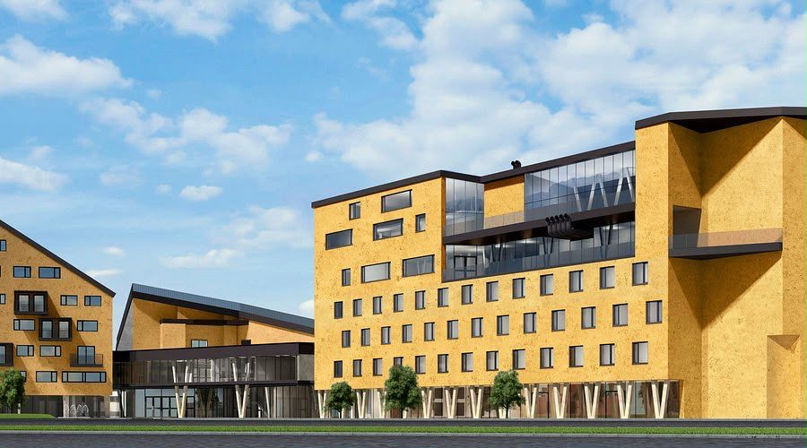
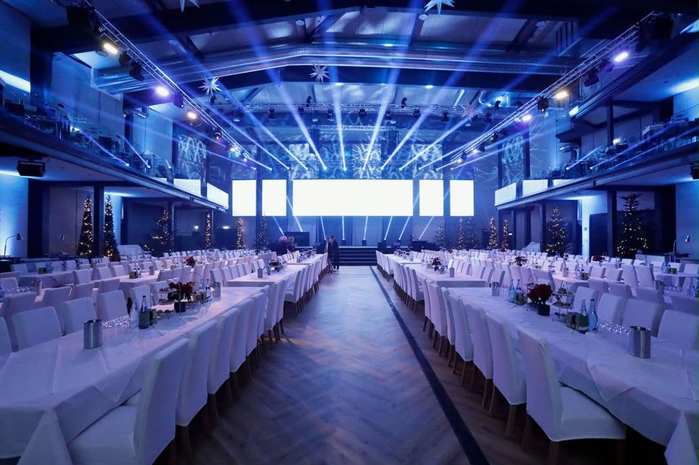

Die Location


Kartendaten © OpenStreetMap-Mitwirkende
Anreise
Öffentlich
Regionalbus 160 – alle 30 Min
Haltestelle Puch b. Hallein, Gewerbegebiet
S-Bahn S3 – alle 30 Min
Haltestelle Puch b. Hallein, Urstein · ca. 15 Min zu Fuß
Auto
Autobahn A10
Abfahrt Puch-Urstein
Parken
Parkhaus direkt beim Zentrum für Visionen, Urstein Nord 24
Shuttle
Zentrum für Visionen → Hanuschplatz & Hauptbahnhof
1. Abfahrt: 01:00 Uhr
2. Abfahrt: 01:45 Uhr
Optional zubuchbar: +5 €, Abholung als physische Karte direkt beim Ball.